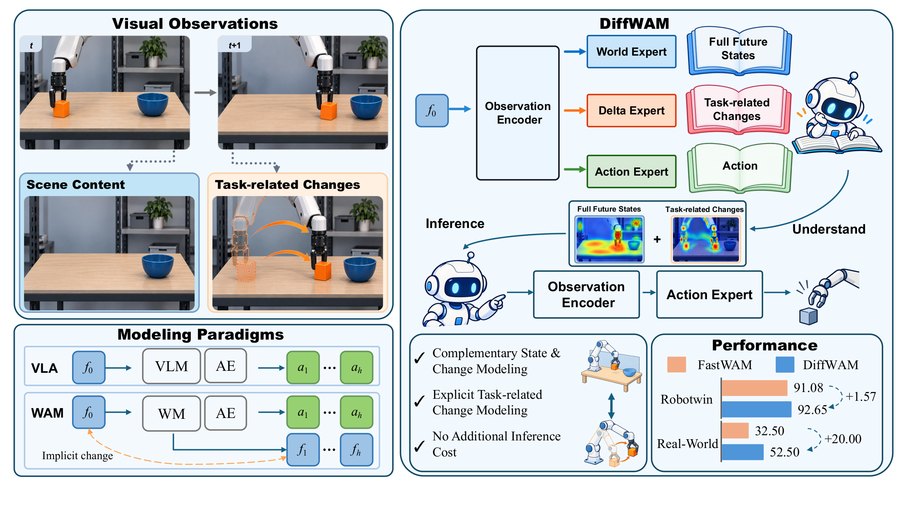
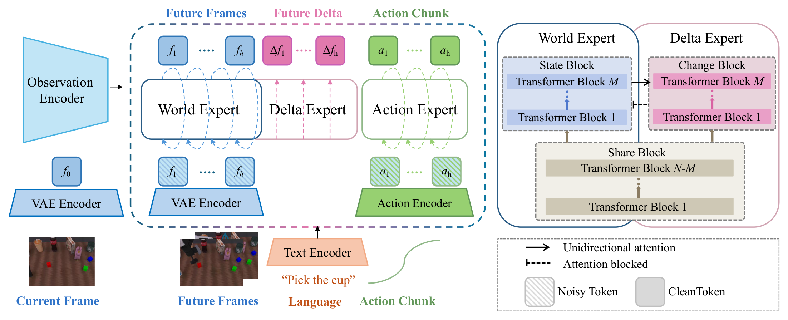
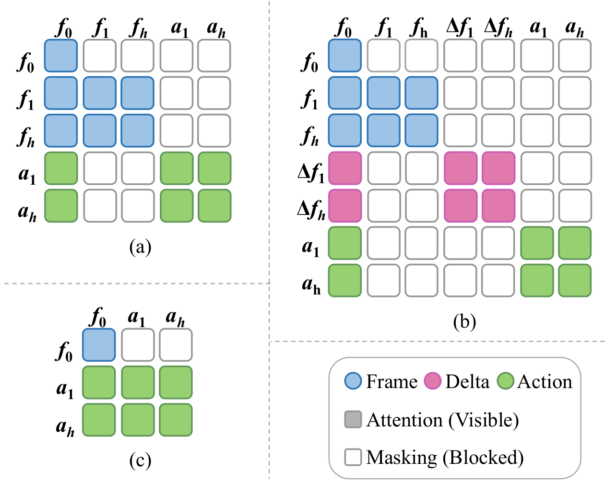
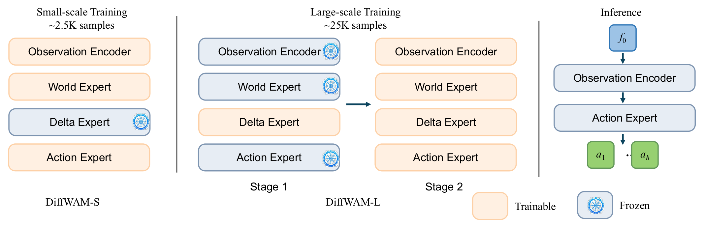
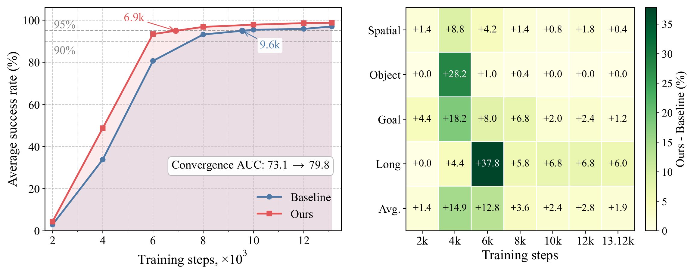

DiffWAM-S
Freezes the independent change-prediction block for smaller training sets while retaining change supervision in the shared representation.
WORLD ACTION MODELS · ROBOT MANIPULATION
Overview

World Action Models (WAMs) have emerged as an important paradigm in robot learning, which jointly predicts future scene states and robot actions from current observations and instructions. However, future states entangle task-related changes with large amounts of task-irrelevant content, such as static backgrounds, which weakens the model's ability to capture changes relevant to task execution. To address this, we propose DiffWAM, a Mixture-of-Experts (MoE) framework that enhances world representations by jointly learning to predict future states and task-related changes. It comprises a World Expert for future frame prediction, an Action Expert for action generation, and a Delta Expert for predicting latent changes between consecutive frames along the trajectory. A structured unidirectional attention mask conditions the Delta, World, and Action Experts solely on the current-frame representation while blocking attention between experts. This design allows both the World and Delta Experts to be removed during inference, introducing no additional inference overhead. DiffWAM achieves state-of-the-art performance on the LIBERO and RoboTwin 2.0 benchmarks and substantially improves over FastWAM on real-world manipulation tasks. Specifically, it attains average success rates of 98.8%, 92.65%, and 52.5%, outperforming the state-of-the-art baseline (i.e., FastWAM) by 1.90, 1.55, and 20.0 percentage points, respectively.
Method
The World and Delta Experts share early visual processing layers, then specialize in future-state generation and latent-change regression. Structured attention prevents information leakage between prediction pathways.


Training & inference

Freezes the independent change-prediction block for smaller training sets while retaining change supervision in the shared representation.
First trains the independent Delta Expert, then jointly optimizes all modules for larger and more diverse datasets.
Both configurations deploy only the Observation Encoder and Action Expert, with no additional inference overhead.
Results
Average success rate across the three primary evaluation settings reported in the paper.
DiffWAM-S
+1.90 pts vs. FastWAMDiffWAM-L
+1.55 pts vs. FastWAMDiffWAM-S
+20.0 pts vs. FastWAMDiffWAM-S is used for the smaller LIBERO training set.
| Method | Spatial | Object | Goal | Long | Avg. |
|---|---|---|---|---|---|
| OpenVLA-O | 97.60 | 98.40 | 97.90 | 94.50 | 97.10 |
| MemoryVLA | 98.40 | 98.40 | 96.40 | 93.40 | 96.65 |
| Motus | 96.80 | 99.80 | 96.60 | 97.60 | 97.70 |
| Lingbot-VA | 98.50 | 99.60 | 97.20 | 98.50 | 98.45 |
| FastWAM | 98.20 | 99.80 | 97.80 | 92.40 | 96.90 |
| ImageWAM | 97.20 | 99.20 | 98.80 | 98.40 | 98.40 |
| WLA | 99.00 | 100.00 | 97.80 | 97.60 | 98.60 |
| DiffWAM-S (Ours) | 98.00 | 99.80 | 99.00 | 98.40 | 98.80 |
| Method | Clean | Random | Avg. |
|---|---|---|---|
| ABot-M0 | 86.60 | 85.08 | 85.84 |
| Motus | 88.66 | 87.02 | 87.84 |
| Lingbot-VA | 92.90 | 91.50 | 92.20 |
| FastWAM* | 91.88 | 90.32 | 91.10 |
| WLA | 92.94 | 90.02 | 91.48 |
| DiffWAM-L (Ours) | 93.28 | 92.02 | 92.65 |
| Method | Task 1 | Task 2 | Avg. |
|---|---|---|---|
| FastWAM | 30 | 35 | 32.50 |
| DiffWAM-S (Ours) | 55 | 50 | 52.50 |
100 demonstrations are collected for each task.

Ablation studies
LIBERO success rates (%). Delta supervision improves the baseline; a dedicated Delta Expert brings a further gain.
| Architecture | Spatial | Object | Goal | Long | Avg. |
|---|---|---|---|---|---|
| World Expert (FastWAM) | 98.20 | 99.80 | 97.80 | 92.40 | 96.90 |
| World Expert + Delta Loss | 97.80 | 100.00 | 97.40 | 95.80 | 97.75 |
| World Expert + Delta Expert | 98.00 | 99.80 | 99.00 | 98.40 | 98.80 |
The full architecture improves average success by 1.90 points and LIBERO-Long by 6.00 points over FastWAM.
| DiffWAM-S configuration | Spatial | Object | Goal | Long | Avg. |
|---|---|---|---|---|---|
| M = 5 | 99.60 | 100.00 | 97.20 | 96.00 | 98.20 |
| M = 10 (default) | 98.00 | 99.80 | 99.00 | 98.40 | 98.80 |
| M = 15 | 98.20 | 99.80 | 97.40 | 97.00 | 98.10 |
| M = 20 | 97.00 | 100.00 | 98.40 | 98.00 | 98.35 |
All configurations retain the delta loss and freeze the independent Delta branch parameters during training.
Citation
@article{zhang2026diffwam,
title = {DiffWAM: Learning World Action Model from Consecutive Visual Difference},
author = {Xinheng Zhang and Haoyu Xiong and Chao Jing and Hongbang Fan and Xingyu Chen},
journal = {arXiv preprint},
year = {2026}
}